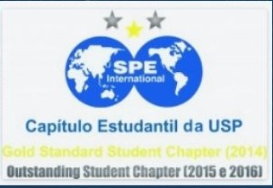
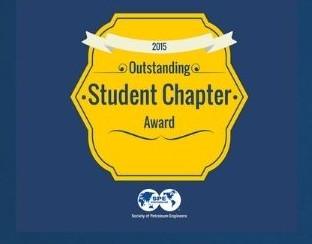
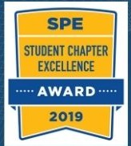

Nossa história
O capítulo estudantil da SPE (Society of Petroleum Engineers) na Universidade de São Paulo. Há mais de 10 anos desenvolvendo estudantes para a indústria do petróleo.
-
2012
Fundação
Fundado por alunos da Engenharia de Petróleo.
-
2013
Campeão SPE Latin American & Caribbean
Título conquistado no Rio de Janeiro.
-
2014
Gold Standard Student Chapter
Reconhecimento da SPE ao capítulo.

-
2015
Outstanding Student Chapter
Primeira conquista do prêmio.

-
2016
ATCE em Dubai
Presença na conferência anual da SPE.
-
2018
Quarto Outstanding seguido
Campeão pela quarta vez consecutiva do Outstanding Student Chapter.
-
2019
Student Chapter Excellence Award
Prêmio da SPE ao capítulo.

-
2020
Presidential Award
Presidential Award for Outstanding Student Chapter.
-
2021
Student Chapter Excellence Award
Mais um Excellence Award da SPE.
-
2024
Volta ao Petrogames
O capítulo volta a disputar o Petrogames depois de anos e conquista o terceiro lugar.
-
2026
Novo time no Petrogames
O capítulo volta a disputar após um ano sem participar e consegue montar um time.
-
2026
Programa de cases
O SPE USP Student Chapter inicia o programa de cases organizado pela diretoria.